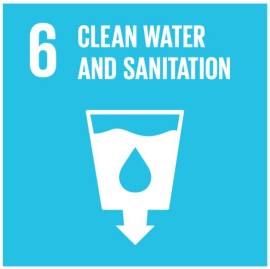

Goal 6: Ensure access to water and sanitation for all
Clean, accessible water for all is an essential part of the world we want to live in. There is sufficient
fresh water on the planet to achieve this. But due to bad economics or poor infrastructure, every year millions
of people, most of them children, die from diseases associated with inadequate water supply, sanitation and hygiene.
Water scarcity, poor water quality and inadequate sanitation negatively impact food security, livelihood choices and
educational opportunities for poor families across the world. Drought afflicts some of the world’s poorest countries,
worsening hunger and malnutrition.
By 2050, at least one in four people is likely to live in a country affected by chronic or recurring shortages of fresh water.

Goals Targets
1) By 2030, achieve universal and equitable access to safe and affordable drinking water for all.
2) By 2030, achieve access to adequate and equitable sanitation and hygiene for all and end open defecation,
paying special attention to the needs of women and girls and those in vulnerable situations.
3) By 2030, improve water quality by reducing pollution, eliminating dumping and minimizing release of hazardous
chemicals and materials, halving the proportion of untreated wastewater and substantially increasing
recycling and safe reuse globally.
4) By 2030, substantially increase water-use efficiency across all sectors and ensure sustainable withdrawals
and supply of freshwater to address water scarcity and substantially reduce the number of people suffering
from water scarcity.
5) By 2030, implement integrated water resources management at all levels, including through transboundary cooperation
as appropriate.
6) By 2020, protect and restore water-related ecosystems, including mountains, forests, wetlands, rivers, aquifers and lakes.
7) By 2030, expand international cooperation and capacity-building support to developing countries in water- and sanitation-related
activities and programmes, including water harvesting, desalination, water efficiency, wastewater treatment, recycling and reuse
technologies.
8) Support and strengthen the participation of local communities in improving water and sanitation management.